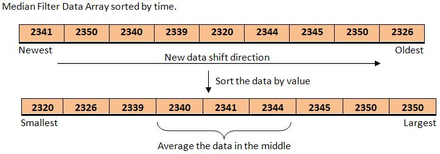

The mTouch Framework supports proximity detection sensors. Enabling this feature for a sensor will provide a higher signal-to-noise ratio by applying a median filter. Future updates may further enhance this capability. The API for handling the proximity sensor is exactly the same as with a normal sensor.
How It Works
The theory of operation for proximity sensors is the same as touch buttons and keys. However, proximity sensors must be able to detect very small changes in capacitance, so a median filter is implemented to reduce the noise level. The largest cost of implementing this feature is the RAM requirement since we must store the previous N samples for the median filter. This also means the response time will be longer than for a normal sensor while the median filter updates.
The basic idea of a median filter is that it stores a history of the previous scan results in a first-in, first-out buffer. After each new scan, the oldest value is replaced with the newest, the array is sorted by size, and the middle values are averaged.

Median Filter Illustration
Proximity Sensor Configuration
-
Configure the proximity sensor(s) to be scanned as normal sensors in the mTouch_config.h file. The differences are that you may need to set a larger oversampling value and a lower threshold value to make the sensor more sensitive. The threshold, unlike for button sensors, should not be set by evaluating the maximum touch shift. Instead, set it by observing the maximum noise level. Using the two-way communications with the mTouch Two-Way GUI is an easy way to adjust these values.
You can find the mTouch Two-Way GUI in Your MLA Directory/mTouchCapDemos/Utilities/PIC12F PIC16F Utilities/mTouch Two-Way GUI
-
At the bottom of mTouch_config.h is the 'Proximity' configuration section.
-
Set MTOUCH_NUMBER_PROXIMITY to the total number of proximity sensors in your system.
-
Define one MTOUCH_SENSORx_IS_PROX definition per enabled proximity sensor. The value of the definition must be its 'proximity index' value. The 'Proximity index' is used as the index to proximity variable arrays. In total, the indexes should start at 0 and end with MTOUCH_NUMBER_PROXIMITY - 1. The order is arbitrary.
#define MTOUCH_NUMBER_PROXIMITY 1
#define MTOUCH_SENSOR3_IS_PROX 0 // MTOUCH_SENSOR3 is a proximity sensor with index 0
#define MTOUCH_NUMBER_PROXIMITY 2
#define MTOUCH_SENSOR4_IS_PROX 0 // MTOUCH_SENSOR4 is a proximity sensor with index 0
#define MTOUCH_SENSOR9_IS_PROX 1 // MTOUCH_SENSOR9 is a proximity sensor with index 1
-
Set the parameters for the median filter:
-
MTOUCH_PROX_BUFFER_SIZE decides the size of the buffer for the median filter. Each proximity sensor will have its own median filter array, so be careful when assigning this value as it will have significant effects on the RAM requirements of the proximity implementation. Valid options are 5, 9, and 15. Larger number means more filtering, but higher RAM requirements and slower response times.
-
MTOUCH_PROX_REMOVE_EXTREME determines how many of the largest and smallest numbers will be removed before averaging the middle values. For example, if we are filtering with a buffer size of 5 and this value is set to 1, we will average the 2nd, 3rd, and 4th values. With a buffer size of 9 and this value set to 2, we will average the 3rd, 4th, 5th, 6th, and 7th values. This value must be less than half the buffer size and greater than 0.
-
Enable (recommended) or disable the MTOUCH_PROX_USE_32BIT_ACCUM option based on your proximity sensor's output data. Enabling this will prevent math overflow errors when the buffer is being accumulated, but will add to the overall RAM requirement. It's possible you will not need this protection, depending on the configuration, so this has been provided to easily allow toggling between the two. (Example when you don't need the accumulator: buffer size of '5' and remove extreme value of '2'. No accumulation occurs: the middle value is taken as-is.)
Example
#define MTOUCH_NUMBER_PROXIMITY 2 // Two proximity sensors
#define MTOUCH_SENSOR0_IS_PROX 0 // MTOUCH_SENSOR0 is a proximity sensor with index 0
#define MTOUCH_SENSOR5_IS_PROX 1 // MTOUCH_SENSOR5 is a proximity sensor with index 1
#define MTOUCH_PROX_BUFFER_SIZE 5 // Median filter stores the last 5 values of each proximity sensor
#define MTOUCH_PROX_REMOVE_EXTREME 1 // Removes the largest and smallest values before averaging
#define MTOUCH_PROX_USE_32BIT_ACCUM // Uses a 32-bit accumulator to prevent math overflow
Proximity Sensor Output
The way to access proximity sensor states is the same as for a normal sensor - using mTouch_GetButtonState(i). The index, i, is the normal sensor index - not the proximity index. For example, in the above code we could check the state of the proximity sensors by using mTouch_GetButtonState(0) and mTouch_GetButtonState(5).